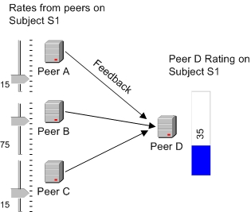
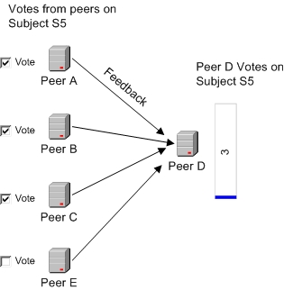
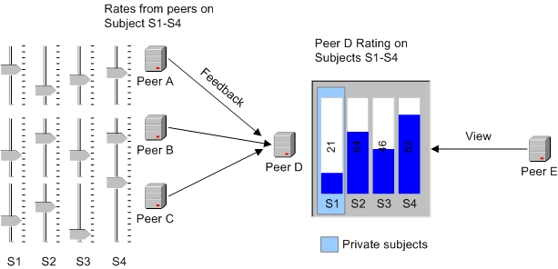
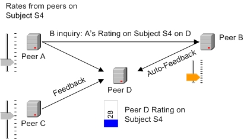
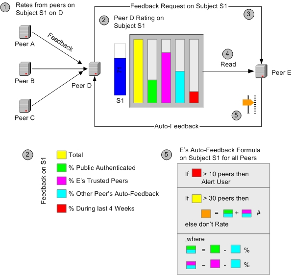

You are here: terrapeer.dev.java.net / Open Feedback-based Trust Model
Main Menu: Home | Project Overview | Resources | Screenshots
On this page: Introduction | Rating | Votes | Private Feedback | Automated Feedback | Auto-Feedback Formulas
This model is network-based, where a peer is an application able to connect to other peers, and let user's create categorized subjects and submit feedback on them. A peer represents that subject specifically or commonly. A feedback is a value in a given range indicating a user's personal view on the particular subject. Comments could be added to feedback-values.
A basic set of rules for this feedback-network could be:
Each peer is unique (ID)
Examples of Peer-based Feedback follow...
Peers A, B, and C submit their rating on a Subject S1 on peer D. The average rating of all values (sum divided by count) is displayed at D. Since ratings are between 0 and 100, the average value will be in the same span. Subject S1 could be “Delivery” in the category “Business / Customers / Experience”, and it's value described as “% Satisfaction”.

Similar to rating, votes can be counted.

A scenario where a peer E views at peer D's rating on a particular range of subjects. Since D keeps S1 private, E can view S2, S3, and S4.

This drawing illustrates an optional auto-feedback mechanism, that lets a peer B rate a peer D based on peer A's rating. Before submitting it's rating on subject S4, peer B first inquires A's rating on the same subject. Based on this value and the relationship to A, peer B can adjust it's rating on D.

Subject S4 could in this situation be “Support of War in Iraq” in the category “Politics / Global Diplomacy / Current Events”, where D could be a public discussion group, and A a political representative (or an index of the Oil-price).
A closer look at the automated feedback-mechanism. Peer D receives feedback from different peers (1) on subject S1. Internally, it can distinguish the feedback (2) by differentiating between anonymous and authenticated feedback, feedback that was submitted during a specific period of time, or feedback that was auto-created.
Peer D could ask other peers, such as peer E, to give their feedback on subject S1 (3). Or peer E itself is interested in submitting feedback to peer D. If subject S1 is of a certain type, it might be useful for E to automate it's feedback on that particular subject, no matter which peer is asking. Peer E thus reads the existing feedback (4) from peer D, and possibly gathers information from interrelated peers (not shown).
Peer E could create an auto-feedback formula (5) that determines it's rating on subject S1 by some factors. In the case below, E would not rate at all on S1 for D if the total feedback D received (yellow) was from less than 30 peers. If the last 10 feedback's were within 4 weeks (red), E would notify it's user, maybe because the high activity requires special attention. Otherwise, E's rate on S1 (orange) would depend on the sum of those peers that rated with authentication (green) and those peers that E in particular trusts (pink). Excluding those feedbacks that themselves are based on formulas (light blue), might provide a better result. In other words, peer E bases it's rate on it's trusted peers and all those not anonymous, but none that use auto-feedback.

Subject S1 could in this instance be “Network Uptime” in the category
“Sun / Clusters”, i.e. monitor E supports whatever other clusters
and external customers think of cluster D, as long as their rating is not automated.
Or maybe “Food quality on Campus”, i.e. if you think the food is
good and a lot of people put their name under the same statement, I agree, too.
Maintained
by Henrik Gehrmann (c) 2004
Last Edited
July 5, 2004